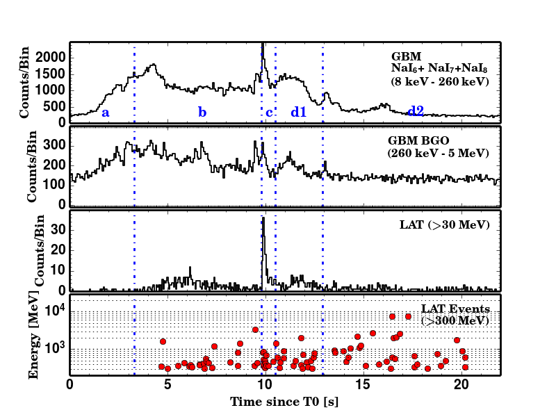
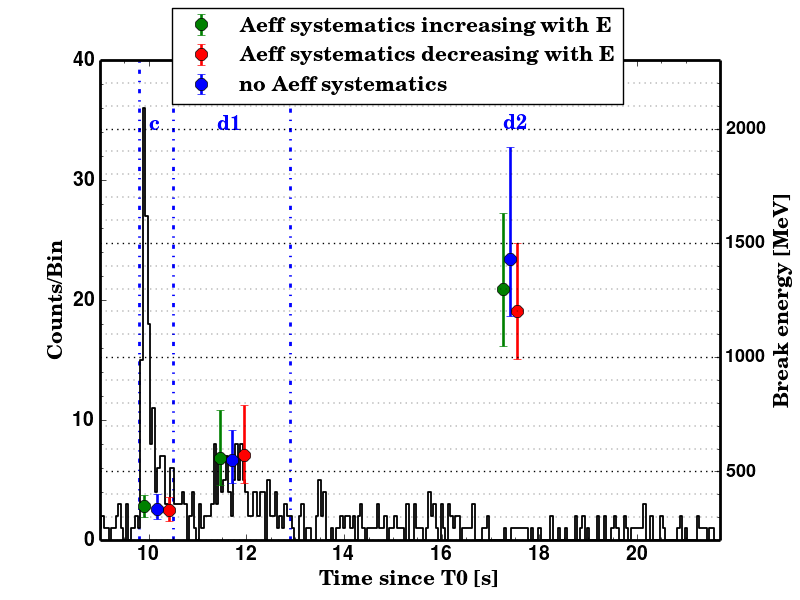

From GRB spectral modelling to the high-energy emission of GRB 090926A.
My PhD research focused on the spectral properties of gamma-ray bursts observed by the Fermi satellite, combining physical modelling, simulations and joint GBM/LAT spectral analysis.

Physically motivated modelling of GRB spectra
One part of my PhD work focused on developing and testing a physically motivated description of the prompt MeV emission of gamma-ray bursts.
Collaborators at the Institut d'Astrophysique de Paris developed a detailed numerical model of relativistic jets based on the internal-shock scenario, including synchrotron radiation and inverse Compton scattering as the main radiative processes.
I simulated observations of the spectra produced by this model using the Fermi GBM and LAT instrumental responses. From these simulations, I developed an analytical four-parameter function designed to reproduce the theoretical spectral shapes while remaining suitable for observational data analysis.
I then applied this model to a large sample of GRBs observed by Fermi/GBM and compared its performance with commonly used empirical descriptions, particularly the Band function and alternative spectral models.
GRB 090926A and its evolving high-energy spectral break
A second major part of my PhD was dedicated to the detailed study of the bright gamma-ray burst GRB 090926A through joint spectral analysis of the Fermi GBM and LAT instruments, including the LAT Pass 8 data set.
The analysis confirmed the presence of a spectral attenuation at hundreds of MeV and showed that this feature persists at later times, with the characteristic break energy evolving toward the GeV domain.
These measurements were used to derive physical constraints on the relativistic outflow, including constraints on the bulk Lorentz factor, using a model developed by Frédéric Daigne and Robert Mochkovitch at the Institut d'Astrophysique de Paris.

Temporal and spectral evolution
The study combined temporal information from the GBM and LAT light curves with time-resolved spectral analysis to follow the evolution of the high-energy emission and of the spectral attenuation throughout the burst.

